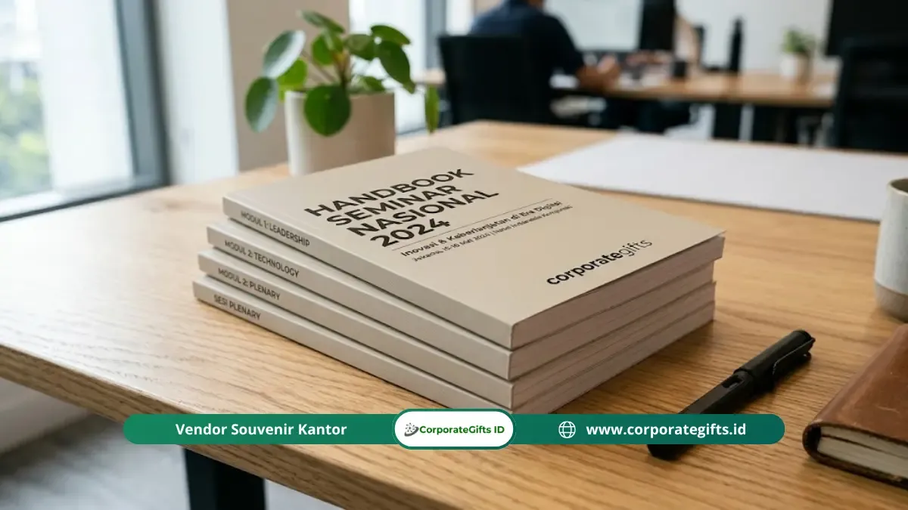

Corporate Gifts ID - Item materi seminar adalah kumpulan dokumen edukatif dan alat bantu belajar praktis seperti handbook materi, jadwal agenda acara, worksheet latihan, kartu kontak narasumber, serta akses konten digital via QR code yang dikemas rapi di dalam goodie bag seminar korporat. Kehadiran paket materi ini bertujuan memperkuat transfer pengetahuan, memandu interaksi peserta sepanjang kegiatan, dan memastikan nilai edukasi acara dapat dipelajari kembali pasca-seminar.
Poin Kunci Materi Seminar Korporat:
- Dukungan Edukatif Spesifik: Setiap dokumen memiliki fungsi terarah untuk memandu pemahaman peserta sebelum, selama, dan sesudah sesi.
- Peningkatan Daya Ingat (Retention): Materi fisik terbukti meningkatkan daya ingat materi hingga dua kali lipat dibanding hanya mengandalkan catatan pribadi.
- Konsep Hybrid Modern: Perpaduan modul cetak dan QR code digital menghadirkan kemudahan akses dokumen pelengkap tanpa membebani tas goodie bag.
- Refleksi Reputasi Penyelenggara: Kerapian tata letak cetak dan kualitas penjilidan mencerminkan keseriusan perusahaan dalam melayani peserta.
Apa Itu Item Materi Seminar?
Secara definitif, item materi seminar merupakan instrumen informasi tertulis maupun digital yang disiapkan panitia penyelenggara untuk mendampingi paparan materi dari pembicara atau fasilitator.
Dalam ekosistem seminar korporat, simposium bisnis, maupun lokakarya teknis, materi seminar memegang peranan krusial yang jauh melampaui fungsi souvenir seremonial. Item ini menjadi aset intelektual utama yang dibawa pulang oleh peserta. Secara garis besar, materi seminar dikelompokkan ke dalam dua format utama:
- Materi Cetak (Physical Prints): Mencakup booklet panduan (handbook), modul teknis, lembar kerja (worksheet), lembar rundown/agenda, dan kartu kontak pembicara.
- Materi Digital (Digital Assets): Tautan terenkripsi atau QR code pintar yang mengarah ke penyimpanan cloud, file slide presentasi beresolusi tinggi, e-certificate, hingga video rekaman on-demand.
Pemilihan kombinasi antara materi cetak dan digital sangat bergantung pada format acara, profil undangan, serta ketersediaan fasilitas teknologi di lokasi penyelenggaraan.
Mengapa Item Materi Seminar Penting dalam Goodie Bag?
Menyertakan dokumen materi terstruktur dalam goodie bag atau tas seminar kit berfungsi sebagai jembatan kognitif antara sesi tatap muka yang padat dengan proses internalisasi pengetahuan mandiri oleh peserta.
Berdasarkan riset Association for Talent Development (ATD), peserta pelatihan korporat yang menerima dokumen acuan terstruktur mampu mempertahankan informasi kunci 65% lebih baik dalam 30 hari pertama pasca-acara dibandingkan peserta yang hanya mengandalkan catatan acak di ponsel atau ingatan semata.
Selain faktor retensi wawasan, kualitas fisik materi cetak juga secara langsung memengaruhi persepsi brand perusahaan penyelenggara. Dokumen yang dijilid rapi, bebas salah ketik, dan dicetak di atas kertas berkualitas premium menunjukkan dedikasi profesional yang tinggi kepada para stakeholder.
Apa Saja Item Materi Seminar yang Wajib Ada?
Untuk menyusun paket seminar korporat yang berbobot dan fungsional, terdapat 5 item materi pokok yang wajib dipersiapkan panitia:
1. Handbook atau Modul Materi Seminar Cetak
Handbook merupakan dokumen kompilasi ringkas yang memuat poin-poin utama presentasi narasumber. Berbeda dari slide cetak biasa, handbook yang baik disusun sebagai buku referensi mandiri yang sistematis dengan hierarki visual yang jelas.
Buku materi ini biasanya dicetak dalam ukuran ringkas seperti A5 atau B5, menggunakan jilid jahit kawat atau jilid spiral wire eksklusif, serta dilengkapi halaman bergaris untuk catatan pribadi di akhir setiap bab topik.

Kombinasi modul cetak berkualitas dan worksheet terstruktur memberikan pengalaman belajar aktif bagi peserta seminar korporat.
2. Agenda Acara Lengkap dengan Jadwal dan Profil Pembicara
Lembar agenda (rundown) memandu ritme kegiatan peserta dari menit ke menit. Lembar ini memuat rincian waktu registrasi, sesi keynote, jadwal rehat kopi (coffee break), alokasi sesi tanya jawab, hingga info ruangan breakout bila ada.
Melampirkan bio singkat dan foto pembicara pada agenda membantu peserta memahami latar belakang keahlian narasumber, sehingga pertanyaan dalam sesi diskusi menjadi jauh lebih tajam dan terarah.
3. Lembar Kerja atau Worksheet untuk Sesi Diskusi
Worksheet adalah instrumen praktikum yang mengubah proses mendengar pasif menjadi aktivitas partisipatif aktif. Di dalam lembar kerja ini terdapat studi kasus, diagram isian, tabel analisis SWOT, atau kerangka aksi (action plan) yang harus diselesaikan peserta selama sesi workshop.
Dokumen ini menjadi bukti nyata keterlibatan peserta dan dapat langsung dijadikan rujukan perbaikan saat kembali ke kantor masing-masing.
4. QR Code Menuju Materi Digital Eksklusif
QR code modern yang dicetak elegan pada kartu tebal art carton atau disisipkan di sampul belakang buku agenda menjadi gerbang akses materi digital tak terbatas. Melalui pindai cepat kamera ponsel, peserta dapat mengunduh dokumen pelengkap berukuran besar seperti laporan riset industri berformat PDF, lembar kerja spreadsheet, maupun sertifikat keikutsertaan.
Sistem hybrid ini sangat disukai karena membuat isi goodie bag tetap ringan dan ramping tanpa mengurangi kelengkapan data informasi.
5. Kartu Nama atau Kontak Narasumber Utama
Kartu kontak atau kartu networking mempermudah komunikasi tindak lanjut antara peserta dan narasumber. Informasi yang dicantumkan meliputi nama lengkap, gelar akademik/profesi, akun LinkedIn resmi, email korporat, serta tautan institusi pembicara.
Item ini sering disimpan secara khusus oleh peserta yang memiliki minat menjajaki kerja sama bisnis, riset bersama, atau konsultasi lanjutan di kemudian hari.
Matriks Komparasi 5 Item Materi Seminar
Berikut perbandingan fungsi teknis dan rekomendasi format media dari kelima item materi seminar korporat:
| Item Materi | Format & Media | Fungsi Utama Pembelajaran | Target Peserta | Tingkat Prioritas |
|---|---|---|---|---|
| Handbook / Modul Cetak | Booklet A5/B5 Jilid Spiral | Panduan referensi belajar mandiri | Seluruh peserta seminar | Wajib (Kritis) |
| Lembar Agenda & Rundown | Flyer Lipat 2 / Art Paper | Pemandu jadwal & profil pembicara | Seluruh peserta & undangan | Wajib (Kritis) |
| Worksheet Interaktif | Kertas HVS tebal 100 gsm | Latihan studi kasus & simulasi | Peserta workshop & pelatihan | Sangat Dianjurkan |
| Kartu Akses QR Digital | Art Carton 310 gsm Laminasi | Unduh bahan presentasi & rekaman | Peserta tech-savvy & hybrid | Wajib (Modern) |
| Kartu Kontak Pembicara | Business Card tebal berlogo | Fasilitasi networking B2B lanjutan | Eksekutif, mitra, & profesional | Opsional Relevan |
Bagaimana Cara Memilih Item Materi Seminar yang Tepat?
Menentukan kombinasi item materi yang optimal menuntut evaluasi menyeluruh terhadap karakteristik kegiatan dan profil audiens:
Berdasarkan Tujuan Seminar
- Pelatihan Keterampilan Teknis: Mewajibkan handbook modular yang mendalam disertai rangkaian worksheet latihan bertahap.
- Keynote Bisnis & Kepemimpinan: Cukup dengan booklet ringkas, lembar agenda eksekutif, dan kartu QR code berdesain mewah.
- Sosialisasi Regulasi & Kebijakan: Membutuhkan kompilasi teks regulasi fisik lengkap yang dijilid kuat agar awet diarsip kantor.
Berdasarkan Profil Peserta
- Eksekutif Senior & C-Level: Lebih menyukai format ringkasan eksekutif satu lembar (one-pager) yang padat data, dikemas dalam folder kulit sintetis.
- Staf Teknis & Manajer Operasional: Membutuhkan buku panduan kerja yang terperinci dengan ruang catatan yang luas.
Berdasarkan Alokasi Anggaran (RAB)
- Paket Dasar (Budget Friendly): Lembar agenda cetak, worksheet esensial, dan kartu QR code materi digital.
- Paket Menengah (Standard Corporate): Handbook spiral A5, pulpen seminar custom, agenda acara, dan kartu akses materi.
- Paket Premium (VIP & Konferensi): Buku handbook hardcover eksklusif, binder multifungsi, kartu narasumber foil emas, dan full digital access.
Kesalahan Umum dalam Menyiapkan Item Materi Seminar
Hindari beberapa jebakan operasional berikut yang sering menurunkan kepuasan peserta terhadap paket materi seminar:
- Materi Tidak Selaras dengan Narasumber: Terjadi bila panitia mencetak materi lama tanpa mengonfirmasi revisi slide terbaru pembicara. Selalu minta draf final H-7 sebelum cetak massal.
- Kualitas Cetak Buruk dan Teks Kabur: Penggunaan printer kantor standar untuk dokumen ratusan halaman sering menghasilkan teks berbayang dan tinta luntur. Percayakan pada percetakan profesional.
- Tautan QR Code Rusak (Error 404): Kelalaian tidak menguji tautan cloud sebelum hari H dapat mencoreng kredibilitas panitia di hadapan ratusan hadirin.
- Beban Kertas Terlalu Tebal: Menjejali goodie bag dengan ratusan lembar cetakan slide hitam-putih hanya akan membuat tas peserta berat dan akhirnya terbuang sia-sia.
Tips Menyusun Paket Materi Seminar yang Efektif
Terapkan lima langkah praktis ini untuk memastikan materi seminar Anda memberikan dampak edukatif maksimal:
- Susun Berdasarkan Kronologi Sesi: Urutkan materi sesuai urutan penampilan pembicara agar peserta mudah mengikuti presentasi secara bertahap.
- Terapkan Identitas Visual Konsisten: Gunakan palet warna, tipografi, dan logo instansi yang seragam di seluruh lembaran dokumen dan goodie bag.
- Uji Kelayakan Tautan Digital: Lakukan simulasi pindai QR code menggunakan beragam merek ponsel pintar dan jaringan internet berbeda setidaknya 3 hari sebelum acara.
- Sediakan Ruang Catatan yang Lapang: Sisipkan halaman kosong bergaris di samping slide atau di akhir setiap topik bahasan.
- Gunakan Wadah Pengemas Rapi: Satukan seluruh lembaran materi dalam map folder berlogo, jilid spiral wire, atau amplop dokumen eksklusif sebelum dimasukkan ke dalam paket seminar kit.